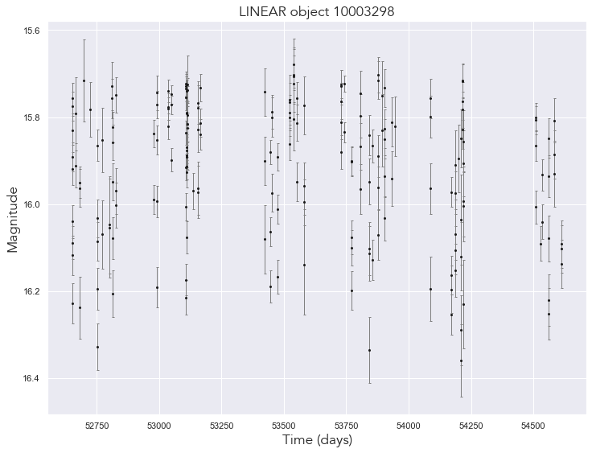
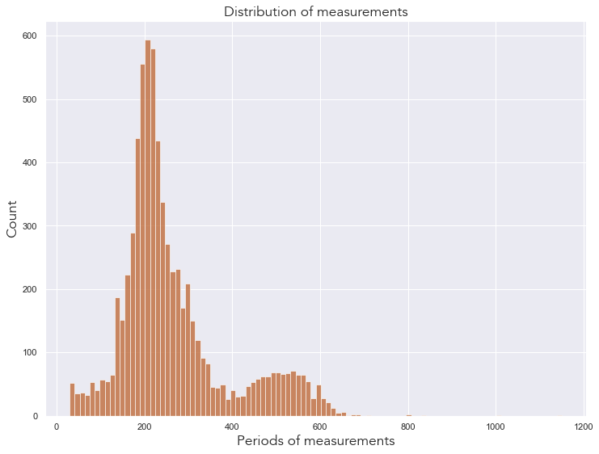
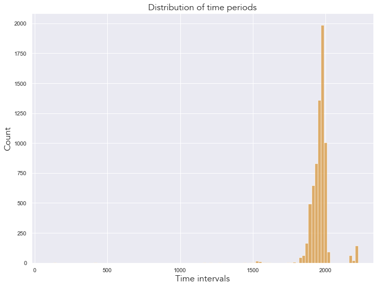
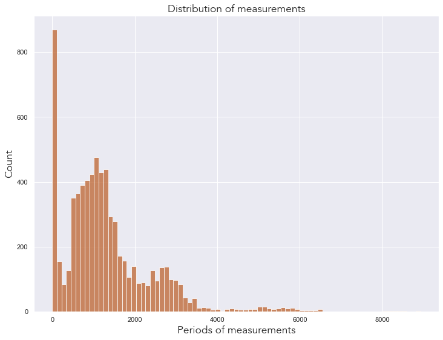
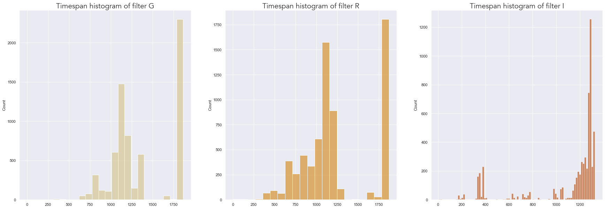
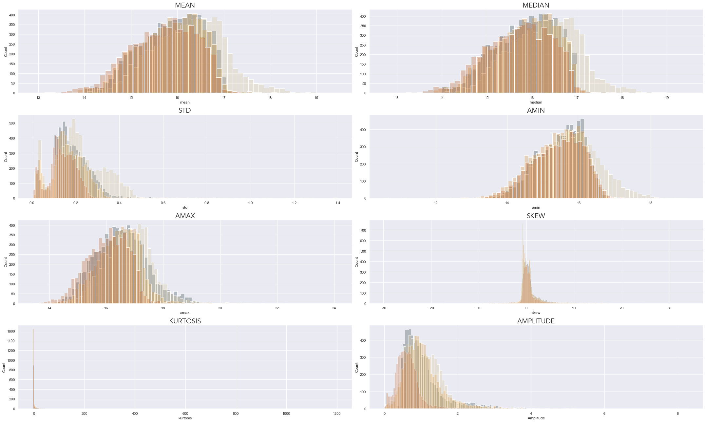
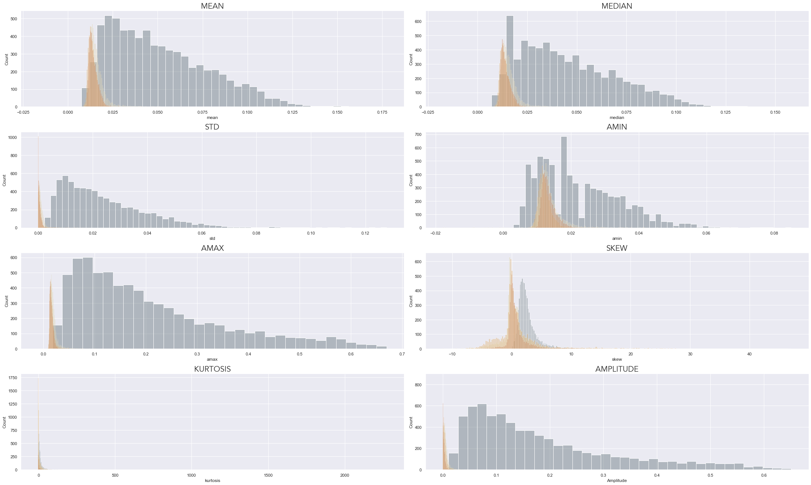
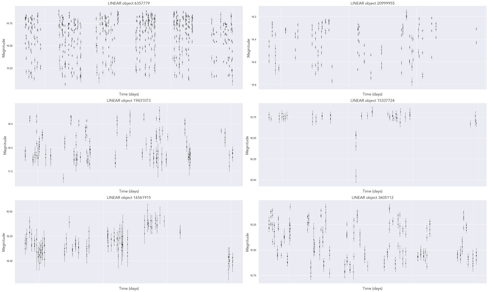
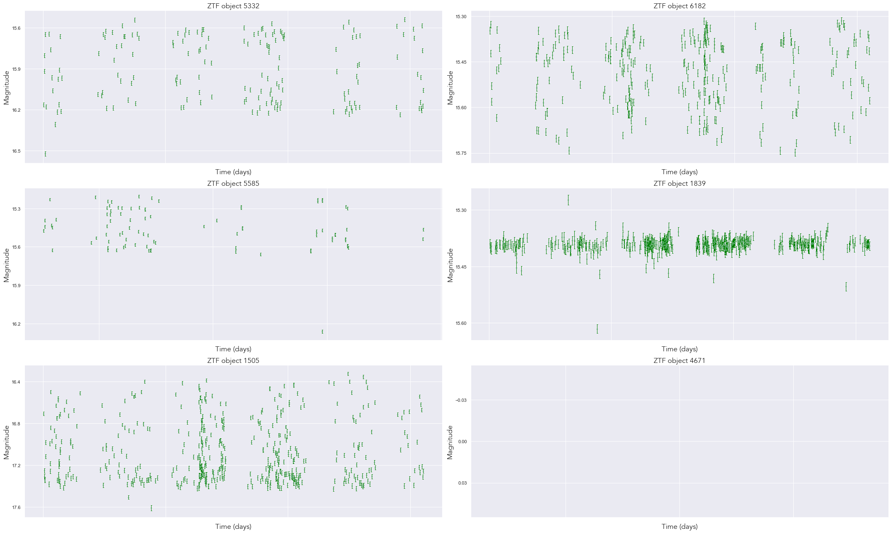
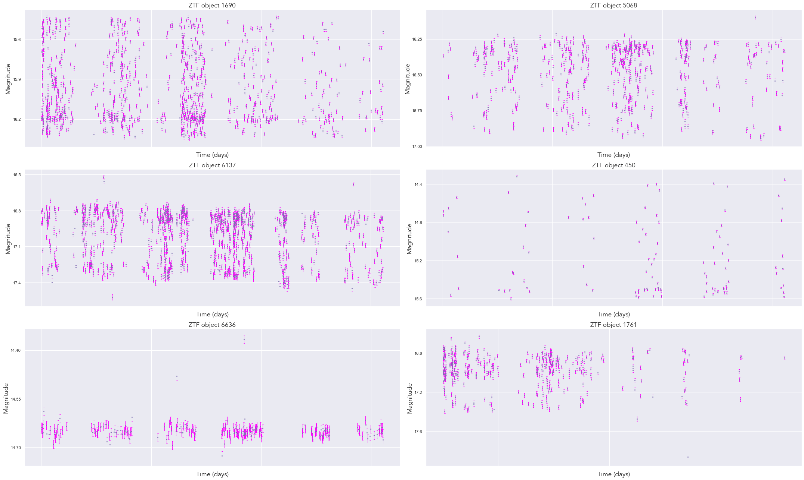

# IMPORTING LIBRARIES
# --------------------
# AstroML
from astroML.datasets import fetch_LINEAR_sample
# ZTF
from ztfquery import lightcurve
# Basic libraries
import random
import pickle
import os
import sys
from tqdm import tqdm
# Plotting
import seaborn as sns
from matplotlib import pyplot as plt
from matplotlib import ticker
import matplotlib.colors as mcolors
from matplotlib.font_manager import FontProperties
# DataFrame analysis
import pandas as pd
import dask.dataframe as dd
# Math libraries
import numpy as np
import scipy as sc
from scipy.stats import norm
# Multithreading/multiprocessing libraries
from concurrent.futures import ThreadPoolExecutor
from concurrent.futures import ProcessPoolExecutor
import threadingUnderstanding and accessing LINEAR and ZTF data
Authors: Ema Donev and dr. Ivezić
This notebook contains all the information necessary to understand the data, its descriptive statistics, and how to plot light curves of both LINEAR and ZTF data.
Importing necessary libraries and configuration
# CONFIG
sns.set_theme() # setting the theme for plotting
np.random.seed(42)
colors = ['#1A090D', '#D8C99B', '#D8973C', '#BD632F', '#273E47']
cmap = mcolors.ListedColormap(colors)
font = FontProperties()
font.set_family('avenir')
font.set_name('Avenir')
font.set_style('normal')
font.set_size('xx-large')
%matplotlib inline # Importing custom libraries
# ----------------------------
sys.path.insert(0,'../src/')
from ZTF_data import *
from config import*
from descriptive_stats import *
from plots import *Loading the data!Downloading LINEAR and ZTF data
LINEAR dataset
The LINEAR dataset (Lincon Near-Earth Asteroid Research) contains 7010 light curves of periodic variable stars. While the original mission of this survey was to find asteroids, it subsequently monitored a substantial portion of the sky, cataloging the brightness of various variable stars. This survey was operated with two telescopes on a site in New Mexico. The two telescopes are equatorially mounted of GEODSS type, where each telescope is denoted as L1 and L2. They observed a broad part of the visible spectrum and the near-infrared spectrum.
The preprocessing process contained the following procedures: 1. Bias correction: removing noise created by the camera 2. Flat-field correction: removing artificial lines and gradients due to varying sensitivities of pixels 3. Preliminary fixed-aperture photometry: subtracting the background light using Poisson statistics
After preprocessing, the data had to be astrometrically recalibrated, meaning that the scientists had to ensure the coordinates of the objects in the data matched another survey, like SDSS. Of all the data, 7% had bad astrometry (the coordinates did not fit), so the scientists removed them from the dataset. The rest of the data had a 1-2% error in astrometry.
Next up was photometric recalibration, meaning that the filters and fluxes had to be recalibrated to match SDSS data. The corrections regarded CCD camera errors, correcting the magnitudes of objects in the data, and correcting underestimated magnitude errors. After the photometric recalibration, the data were grouped into various categories, including a variable star category. While the original dataset has 5 billion objects, only 7010 are confirmed periodic variable stars. The scientists subsequently analyzed this portion of the dataset by categorizing the light curves, calculating their periods, and inferring conclusions from the preceding factors.
We can access the LINEAR dataset via one line of code since we are downloading the data from the AstroML library.
# LINEAR DATA
# ------------
dataL = fetch_LINEAR_sample(data_home='../inputs')Code
# acessing all of the light curves from the dataL and checking if any light curve is missing
c = 0
for i in dataL.ids: # iterating through all of the dataL ID's
light_curve = dataL.get_light_curve(i) # fetching the light curve dataL for a specific ID
c += 1
print(f'The number of light curves in the LINEAR dataset:{c}') The number of light curves in the LINEAR dataset:7010The counter has printed the number 7010, the correct amount of light curves in this dataset. No light curves are missing!
Structure of LINEAR dataset
The structure of the LINEAR dataset is as such: 1. dataL is a AstroML.datasets object and it contains the following:
1.a) dataL.ids is a list of all the IDs of the stars
1.b) dataL.get_light_curve() is a function which acceses the data for a specific ID of a light curve every light curve is a np.array() object where every column is time, magnitude and the magnitude error. In order to get an array for every column the original array must be transposed.
dataL.targetscontains all of the metadata for every light curve eg. rectascension, declination, etc.
Here is an example of a light curve:
Code
ID = dataL.ids[0] # accessing the first LINEAR ID
lc = dataL.get_light_curve(ID)
time, mag, magerr = lc.T # transposing the data
#--------
print(f'LINEAR ID:{ID}')
targets = dataL.targets[0]
print(targets)
ra, dec = targets[3], targets[4]
print(f'Rectascension:{ra}, and Declination:{dec}')
#--------
fig, ax = plt.subplots(1,1, figsize=(12,9)) # creating subplots with 2 columms and 3 rows
ax.errorbar(time, mag, magerr, fmt='.k', ecolor='gray',lw=1, ms=4, capsize=1.5)
ax.set_xlabel('Time (days)',fontproperties=font)
ax.set_ylabel('Magnitude', fontproperties=font)
ax.set_title('LINEAR object {0}'.format(ID), fontproperties=font)
ax.invert_yaxis()
plt.show()LINEAR ID:10003298
(10003298, 207.52946, 33.70615, 207.529404, 33.706001, 15.73, 1.84, 0.81, 0.31, 0.16, 0.63, 15.89, 0.16, 0.19, 1.12, -0.61, -0.01, -1, 0)
Rectascension:207.529404, and Declination:33.706001
For further analysis we will require the LINEAR ID, the ra and dec values, and finally, the data for every light curve (time, magnitude, errors).
Introductory statistics of LINEAR data
Code
# NUMBER OF MEASUREMENTS
# -----------------------
pL = []
for i in dataL.ids:
lc = dataL.get_light_curve(i)
t, m, me = lc.T
pL.append(len(t))
total_obser = sum(pL) # summing the number of measurements of every light curve
print(f'Our dataset contains {total_obser} observations!')Our dataset contains 1851936 observations!Code
plt.figure(figsize=(12,9))
sns.histplot(data=pL,color='#BD632F') # drawing a histogram of the distribution of measurements
plt.title('Distribution of measurements', fontproperties=font)
plt.xlabel('Periods of measurements', fontproperties=font)
plt.ylabel('Count', fontproperties=font)
plt.show()
The graph above shows that most of our light curves have around 200 to 300 measurements, with a subsequent peak at about 500 measurements per light curve.
Code
# TIME DIFFERENCE
tmL = []
for i in dataL.ids:
lightc = dataL.get_light_curve(i)
t, m, me = lightc.T
time = t[len(t)-1] - t[0] # last time - first time
tmL.append(time)Code
plt.figure(figsize=(12,9))
sns.histplot(data=tmL,color='#D8973C', bins=100)
plt.title('Distribution of time periods',fontproperties=font)
plt.xlabel('Time intervals',fontproperties=font)
plt.ylabel('Count', fontproperties=font)
plt.show()
This graph shows that most of our time intervals span around 1800 to 2000 days. So, no matter the variable star type, most actual time intervals are very long.
ZTF dataset
The Zwicky Transient Facility is an optical time-domain survey that uses the Palomar 48-inch Schmidt telescope to observe the entire Northern hemisphere sky in 3 different bands: g, r, and i, and has been operating since October 2017. This telescope has a large field of view, taking in a lot of data.
All the data gathered by ZTF is stored at the IPAC, which can be accessed via IRSA, as shown in this project. All of the raw data was processed so that every pixel had an average of 5 bits, and although this increased sky noise by 1%, the increase is negligible. All the images were FITS images which the program processed in the following way:
Preprocessing: removing bias frames and flat field correction frames.
Astrometry: Using the
SCAMPpackage, all objects were astrometrically calibrated to match theGAIAsurvey.Photometry: All images were photometrically calibrated following the
PanSTARRS 1survey.Final processing: Finally, masks were made for saturation, bad pixels were removed, ghosts and any instrumental artifacts, and other defects.
Every image was then categorized as either a moving or a changing source using the ZOGY algorithm. Furthermore, point-like moving objects were identified using the custom ZTF Moving-object Discovery Engine (ZMODE).
ZTF was able to observe the following objects:
1. Transient objects
These objects are supernovae found in other galaxies, and the ZTF survey captured their light curves.
2. Neutrinos and gravitational-wave events
The ZTF survey showed that scientists could use ZTF in the future to undertake observations of neutrinos and gravitational-wave events.
3. Variable objects
These include variable stars but also light curves of asteroids. The light curves in the ZTFdataset were built upon every few months, and the light curves were stored in HDF5 match files per each field of observation. ZTF contains many light curves, and some most notable types are Be stars, RR Lyrae stars, light curves of NEOs, Asteroids, and the activity of Comets and Centaurs.
Accessing the ZTF data
The ZTF data is on an extrenal API provided by the IRSA webpage. Since querying for the data takes a lot of time, we use asynchronous programming to tackle multiple queries at a time, significantly shortening the runtime. All light curves are searched by equatorial coordinates (found in dataL.targets) and saved as DataFrames inside an array, along with the search ID as a tuple. So, array([(ID1, DataFrame object 1), (ID2, DataFrame object 2),…]). All of the code can be found in the custom ZTF_data.py library.
ZTF_data = data_ztf('ZTF_light_curves.npy')Accessing the data!Code
print('Shape of the dataset:', ZTF_data[0][1].shape)
ZTF_data[0][1].head()(2197, 4)| mjd | mag | magerr | filtercode | |
|---|---|---|---|---|
| 0 | 58202.353634 | 16.516510 | 0.016864 | zg |
| 1 | 58202.357454 | 16.517498 | 0.016866 | zg |
| 2 | 58205.341262 | 16.568840 | 0.017013 | zg |
| 3 | 58205.392616 | 17.055435 | 0.019523 | zg |
| 4 | 58208.322326 | 16.585726 | 0.017066 | zg |
The ZTF data is structured so every light curve has an ID or the order it was processed in as the first element of a tuple, and the second element is a Pandas DataFrame, which contains the light curve data. It has 4 columns: mjd or the time values, mag or the magnitude values, magerr or the magnitude errors, and finally filtercode or the filter in which the data was taken in.
Every light curve was made in 3 filters: zg, zr and zi, or the green, red and infrared filters. Each filter has a different amount of observation points and gives us insight into the light curve’s structure.
Code
no = 0
na_id = []
for i in range(NUM_STARS):
if ZTF_data[i][1].empty == True: # if the dataframe is empty,
no += 1 # count it
na_id.append(i)
print('Number of empty light curve DataFrames', no)178
[21, 43, 48, 64, 75, 119, 138, 151, 165, 180]We can see that 178 light curves in the ZTF datasets contain no values, meaning they were not found in the ZTF database.
Code
# NUMBER OF OBSERVATIONS
# ------------------------
pztf = []
for i in num:
pztf.append(ZTF_data[i][1].shape[0])
total_obser_ztf = sum(pztf) # summing the number of observation for every light curve9187878The ZTF data contains 9 187 878 observations! That is almost nine times more than for the LINEAR data.
Code
plt.figure(figsize=(12,9))
sns.histplot(data=pztf,color='#BD632F') # drawing a histogram of the distribution of measurements
plt.title('Distribution of measurements', fontproperties=font)
plt.xlabel('Periods of measurements', fontproperties=font)
plt.ylabel('Count', fontproperties=font)
plt.show()
The graph above shows that a considerable amount of light curves contain very few points in their observation, with another peak at around 1000 observations.
Splitting the data into respective filters for analysis
ZTF_g = []
ZTF_r = []
ZTF_i = []
for i in tqdm(range(NUM_STARS)):
lc = ZTF_data[i][1]
# green
lcg = lc.loc[lc['filtercode']=='zg']
lcg = lcg.reset_index()
lcg = lcg.drop(['index'],axis=1)
ZTF_g.append((i, lcg))
# red
lcr = lc.loc[lc['filtercode']=='zr']
lcr = lcr.reset_index()
lcr = lcr.drop(['index'],axis=1)
ZTF_r.append((i, lcr))
# infrared
lci = lc.loc[lc['filtercode']=='zi']
lci = lci.reset_index()
lci = lci.drop(['index'],axis=1)
ZTF_i.append((i, lci))100%|██████████| 7010/7010 [00:26<00:00, 267.98it/s]Now we have separated every star by its filter! We now have 3 respective datasets of the same stars where each dataframe encompases the filters of every light curve.
Introductory statistics on ZTF data
Code
# TIME DIFFERENCE
# ----------------
time_g = []
time_r = []
time_i = []
for i in tqdm(range(NUM_STARS)):
lcg = ZTF_g[i][1]
lcr = ZTF_r[i][1]
lci = ZTF_i[i][1]
# green
if lcg.shape[0] > 0:
n = lcg.shape[0]-1
timeg = lcg['mjd'][n] - lcg['mjd'][0]
time_g.append(timeg)
else:
pass
# red
if lcr.shape[0] > 0:
n = lcr.shape[0]-1
timer = lcr['mjd'][n] - lcr['mjd'][0]
time_r.append(timer)
else:
pass
# infrared
if lci.shape[0] > 0:
n = lci.shape[0]-1
timei = lci['mjd'][n] - lci['mjd'][0]
time_i.append(timei)
else:
pass100%|██████████| 7010/7010 [00:01<00:00, 3695.43it/s]Code
# PLOTTING TIME DIFFERENCE
# -------------------------
fig, axs = plt.subplots(1,3, figsize=(30,10))
# histogram 1
axs[0].set_title('Timespan histogram of filter G',fontproperties=font)
sns.histplot(data=time_g,color='#D8C99B',ax=axs[0]) # drawing a histogram of the distribution of measurements
#histogram 2
axs[1].set_title('Timespan histogram of filter R',fontproperties=font)
sns.histplot(data=time_r,color='#D8973C',ax=axs[1]) # drawing a histogram of the distribution of measurements
#histogram 3
axs[2].set_title('Timespan histogram of filter I',fontproperties=font)
sns.histplot(data=time_i,color='#BD632F',ax=axs[2]) # drawing a histogram of the distribution of measurements
plt.show()
In the g filter, most timespans are of 1750 days, with a subsequent peak at around 1100 days. In the r filter we can see a similar distribution, although the peak at aroun 1100 is much stronger. Finally, in the i filter, most timespans are around 1300 days, with a subsequent peak at around 400! This is the shortest inerval thus far.
Analysis of LINEAR and ZTF data
Descriptive statistics of magnitude values
LINEAR dataset
stats_L = lc_descriptive_stats_table_LINEAR('mag')Argument received: magCode
stats_L.head()| mean | median | std | amin | amax | skew | kurtosis | Amplitude | |
|---|---|---|---|---|---|---|---|---|
| index | ||||||||
| 10003298 | 15.920224 | 15.8880 | 0.159858 | 15.679 | 16.360 | 0.659768 | -0.482567 | 0.681 |
| 10004892 | 16.839543 | 16.8440 | 0.236847 | 16.382 | 17.975 | 0.767109 | 3.528837 | 1.593 |
| 10013411 | 15.574235 | 15.5020 | 0.192148 | 15.400 | 16.391 | 2.227095 | 4.286783 | 0.991 |
| 10021274 | 14.939383 | 14.9885 | 0.231373 | 14.289 | 15.330 | -0.624265 | -0.566168 | 1.041 |
| 10022663 | 14.253744 | 14.2935 | 0.227889 | 13.698 | 14.665 | -0.550420 | -0.498097 | 0.967 |
ZTF dataset
stats_Z_g = lc_descriptive_stats_table_ZTF('mag', ZTF_g)Code
stats_Z_g.head()| mean | median | std | amin | amax | skew | kurtosis | Amplitude | |
|---|---|---|---|---|---|---|---|---|
| index | ||||||||
| mag | 16.735973 | 16.682770 | 0.190980 | 16.355003 | 17.274315 | 0.547621 | -0.987585 | 0.919311 |
| mag | 17.090297 | 17.166143 | 0.248268 | 16.568600 | 17.351080 | -1.005061 | -0.432566 | 0.782480 |
| mag | 16.204822 | 16.146278 | 0.152526 | 15.931999 | 16.806747 | 2.009203 | 3.217131 | 0.874748 |
| mag | 15.013304 | 15.165165 | 0.365250 | 14.104170 | 15.602118 | -0.741975 | -0.814440 | 1.497949 |
| mag | 14.372281 | 14.500145 | 0.362280 | 13.489013 | 15.489503 | -0.676807 | -0.701880 | 2.000490 |
stats_Z_r = lc_descriptive_stats_table_ZTF('mag', ZTF_r)Code
stats_Z_r.head()| mean | median | std | amin | amax | skew | kurtosis | Amplitude | |
|---|---|---|---|---|---|---|---|---|
| index | ||||||||
| mag | 15.897570 | 15.851342 | 0.167484 | 15.633669 | 16.323614 | 0.522559 | -1.009893 | 0.689945 |
| mag | 16.785922 | 16.774748 | 0.220514 | 16.429140 | 17.081219 | -0.150690 | -1.395480 | 0.652079 |
| mag | 15.458849 | 15.393452 | 0.165171 | 15.277586 | 16.366425 | 2.121737 | 3.979763 | 1.088839 |
| mag | 14.851248 | 14.929792 | 0.255162 | 13.541904 | 15.399588 | -0.686116 | -0.339955 | 1.857683 |
| mag | 14.196490 | 14.250234 | 0.245730 | 13.636862 | 14.918344 | -0.551952 | -0.699978 | 1.281482 |
stats_Z_i = lc_descriptive_stats_table_ZTF('mag', ZTF_i)Code
stats_Z_i.head()| mean | median | std | amin | amax | skew | kurtosis | Amplitude | |
|---|---|---|---|---|---|---|---|---|
| index | ||||||||
| mag | 15.600686 | 15.549002 | 0.168734 | 15.294890 | 15.917844 | 0.405756 | -1.221085 | 0.622954 |
| mag | 15.128821 | 15.077989 | 0.133336 | 15.009691 | 15.657438 | 2.311716 | 4.382408 | 0.647747 |
| mag | 14.868257 | 14.941725 | 0.199451 | 14.308695 | 15.290393 | -0.604343 | -0.736272 | 0.981698 |
| mag | 15.700998 | 15.610683 | 0.229866 | 15.428493 | 16.695438 | 1.166536 | 0.739817 | 1.266946 |
| mag | 15.767120 | 15.766270 | 0.028933 | 15.552393 | 15.897695 | -1.391850 | 16.485549 | 0.345302 |
Plotting the results
We need to reset all the indexes so that the results can be plotted!
Code
stats_Z_g = stats_Z_g.reset_index(drop=True)
stats_Z_r = stats_Z_r.reset_index(drop=True)
stats_Z_i = stats_Z_i.reset_index(drop=True)True
True
True
TrueCode
columns = ['mean', 'median', 'std', 'amin', 'amax', 'skew','kurtosis','Amplitude']
fig, ax = plt.subplots(4,2, figsize=(30,18)) # creating subplots with 2 columms and 3 rows
ax = ax.flatten() # flatten the axes
for i in tqdm(range(len(columns))): #plot the same type of graph for every property
ax[i].set_title(columns[i].upper(), fontproperties=font) # the title of the graph is the column name
sns.histplot(data=stats_L,x=columns[i],ax=ax[i], color='#273E47', alpha=0.3) # blue
sns.histplot(data=stats_Z_g, x=columns[i], ax=ax[i], color='#D8C99B',alpha=0.3) # light color
sns.histplot(data=stats_Z_r, x=columns[i], ax=ax[i], color='#D8973C',alpha=0.3) # orange color
sns.histplot(data=stats_Z_i, x=columns[i], ax=ax[i], color='#BD632F',alpha=0.3) # dark orange color
fig.tight_layout()
plt.show()100%|██████████| 8/8 [00:13<00:00, 1.74s/it]
From the graphs above we can make a few conclusions.
The mean graph: the distribution from all the data is more or less the same, and the most common mean is from 16 to 17 magnitudes. The most visible difference is how the green filter of the
ZTFdata has a longer tail towards lower magnitudes, while the infrared filter has a longer tail towards the higher magnitudes.The median graphs: the distribution from all the data is kind of the same, where the most common median is around 16 magnitudes. The observation from the mean graph also applies here.
The standard deviation graph: Here we can see large discrepancies. There are 2 peaks: one peak is at around 0 (meaning the data is very concentrated), and another peak is at around 0.2 (which is also very concentrated around the mean). The
ZTFgreen filter has a distribution where many values are inbetween 0.2 and 0.4. TheLINEARdataset doesn’t have a peak at around 0.The minimum graph: Here the distributions are almost identical, and most minimums range at around 16 magnitudes. The
ZTFgreen filter has a distribution ranging all the way to 18 magnitudes.The maximum graph: Again, the distribution is almost identical, where values range from 14 magnitudes to 20 magnitudes.
The skew graph: All the distributions are almost identical, and most values range around 0, meaning that the distributions aren’t very skewed.
The kurtosis graph: again, the distributions are almost identical, and almost every value is around 0, meaning that most of our light curves follow a normal distribution.
The amplitude graph: Here the distributions aren’t so similar. The most common
LINEARamplitude is a bit less than 1 magnitude, forZTFgreen data is around 1.5, forZTFred is around 1-1.1 magnitudes, and finally forZTFinfrared the most common amplitude is around 0.6-0.7 magnitudes. The total range is from close to 0 all the way to 4 magnitudes!
Descriptive statistics of magnitude error values
LINEAR data
stats_L_er = lc_descriptive_stats_table_LINEAR('magerr')
stats_L_er.head()Argument received: magerr| mean | median | std | amin | amax | skew | kurtosis | Amplitude | |
|---|---|---|---|---|---|---|---|---|
| index | ||||||||
| 10003298 | 0.048587 | 0.044 | 0.018496 | 0.018 | 0.115 | 1.239252 | 1.627132 | 0.097 |
| 10004892 | 0.109491 | 0.098 | 0.053818 | 0.039 | 0.332 | 1.606721 | 3.142803 | 0.293 |
| 10013411 | 0.039447 | 0.028 | 0.042827 | 0.015 | 0.448 | 6.871714 | 56.888840 | 0.433 |
| 10021274 | 0.020528 | 0.020 | 0.009136 | 0.009 | 0.056 | 1.671405 | 3.435779 | 0.047 |
| 10022663 | 0.012114 | 0.011 | 0.005738 | 0.006 | 0.043 | 2.365310 | 8.099770 | 0.037 |
ZTF data
stats_Z_g_er = lc_descriptive_stats_table_ZTF('magerr', ZTF_g)
stats_Z_g_er.head()| mean | median | std | amin | amax | skew | kurtosis | Amplitude | |
|---|---|---|---|---|---|---|---|---|
| index | ||||||||
| magerr | 0.016739 | 0.016988 | 0.001702 | 0.013247 | 0.021473 | -0.194755 | -0.749422 | 0.008226 |
| magerr | 0.019975 | 0.020332 | 0.001545 | 0.016999 | 0.021836 | -0.792410 | -0.726045 | 0.004837 |
| magerr | 0.014782 | 0.014636 | 0.000557 | 0.013328 | 0.017227 | 1.396176 | 4.349406 | 0.003898 |
| magerr | 0.013280 | 0.013297 | 0.000231 | 0.011187 | 0.013583 | -7.032957 | 54.219491 | 0.002396 |
| magerr | 0.014277 | 0.014225 | 0.000269 | 0.012926 | 0.014828 | -2.337813 | 10.403696 | 0.001902 |
stats_Z_r_er = lc_descriptive_stats_table_ZTF('magerr', ZTF_r)
stats_Z_r_er.head()| mean | median | std | amin | amax | skew | kurtosis | Amplitude | |
|---|---|---|---|---|---|---|---|---|
| index | ||||||||
| magerr | 0.014733 | 0.014637 | 0.000322 | 0.013360 | 0.015830 | -0.113479 | 3.489046 | 0.002469 |
| magerr | 0.016733 | 0.016517 | 0.001295 | 0.014859 | 0.018631 | 0.055509 | -1.437554 | 0.003772 |
| magerr | 0.013516 | 0.013459 | 0.000139 | 0.013451 | 0.014983 | 3.855843 | 23.218715 | 0.001532 |
| magerr | 0.014877 | 0.014798 | 0.000269 | 0.013531 | 0.015498 | -0.974238 | 5.084106 | 0.001966 |
| magerr | 0.014054 | 0.014062 | 0.000090 | 0.013198 | 0.014289 | -5.911293 | 38.424977 | 0.001091 |
stats_Z_i_er = lc_descriptive_stats_table_ZTF('magerr', ZTF_i)
stats_Z_i_er.head()| mean | median | std | amin | amax | skew | kurtosis | Amplitude | |
|---|---|---|---|---|---|---|---|---|
| index | ||||||||
| magerr | 0.013091 | 0.013459 | 0.000607 | 0.011990 | 0.013925 | -0.514070 | -1.374902 | 0.001935 |
| magerr | 0.012506 | 0.012472 | 0.000093 | 0.012461 | 0.012987 | 3.139535 | 9.975130 | 0.000526 |
| magerr | 0.014519 | 0.014490 | 0.000056 | 0.014481 | 0.014778 | 1.662839 | 2.298835 | 0.000298 |
| magerr | 0.013121 | 0.012924 | 0.000448 | 0.012756 | 0.016380 | 2.606883 | 11.937356 | 0.003624 |
| magerr | 0.015054 | 0.015051 | 0.000048 | 0.014756 | 0.015298 | -0.152441 | 9.746567 | 0.000542 |
Plotting the results
Code
stats_Z_g_er = stats_Z_g_er.reset_index(drop=True)
stats_Z_r_er = stats_Z_r_er.reset_index(drop=True)
stats_Z_i_er = stats_Z_i_er.reset_index(drop=True)True
False
False
FalseCode
columns = ['mean', 'median', 'std', 'amin', 'amax', 'skew','kurtosis','Amplitude']
fig, ax = plt.subplots(4,2, figsize=(30,18)) # creating subplots with 2 columms and 3 rows
ax = ax.flatten() # flatten the axes
for i in tqdm(range(len(columns))): #plot the same type of graph for every property
ax[i].set_title(columns[i].upper(), fontproperties=font) # the title of the graph is the column name
sns.histplot(data=stats_L_er,x=columns[i],ax=ax[i], color='#273E47', alpha=0.3) # blue
sns.histplot(data=stats_Z_g_er, x=columns[i], ax=ax[i], color='#D8C99B',alpha=0.3) # light color
sns.histplot(data=stats_Z_r_er, x=columns[i], ax=ax[i], color='#D8973C',alpha=0.3) # orange color
sns.histplot(data=stats_Z_i_er, x=columns[i], ax=ax[i], color='#BD632F',alpha=0.3) # dark orange color
fig.tight_layout()
plt.show()100%|██████████| 8/8 [00:13<00:00, 1.73s/it]
From the graphs above, we can clearly see that many attributes from LINEAR and ZTF data do not match. 1. The mean graph: The most common mean error for ZTF in all filters is around 0.015, while for LINEAR it is around 0.025 with many light curves with much higher values.
The median graph: Again, a huge difference. The most common median error for
ZTFin all filters is again around 0.015 while forLINEARits again from 0.025 to higher values, all the way to 0.125.The standard deviation graph: Most values for standard deviation in all
ZTFfilters is around 0 (very concentrated around the mean), while forLINEARthe values are a bit more spead out, taking on values from around 0.02 to 0.04.The minimum graph: Most values for the minimum error range around 0.01 for all
ZTFfilters, but forLINEARthe distribution doesn’t have a clear peak, but the values range from 0.01 to 0.04.The maximum graph: most values for the max are close to 0 for all
ZTFfilters, but forLINEARthe range is very large, from around 0 all the way o 0.6.The skew graph: most values for the skewness for all
ZTFfilters is around 0, but still fairly spread out in both directions. TheLINEARvalues are slightly above 0 and a bit spread out but not as much.The kurtosis graph: the only graph where both distributions are almost identical and the value is almost 0.
The amplitude graph: most amplitudes for all
ZTFfilters are from 9 to around 0.01, while forLINEARthey range from 0.01 all the way to 0.6.
From all of this we can conclude that LINEAR has much larger observational errors proportional to the ZTF errors.
Plotting light curves
Code
# LINEAR DATA
# -------------
lc_LINEAR()
Code
# GREEN FILTER
lc_ZTF(ZTF_g, '.g', 'green')
Code
# RED FILTER
lc_ZTF(ZTF_g, '.r', 'red')
Code
# INFRARED FILTER
lc_ZTF(ZTF_g, '.m', 'magenta')
Now that we have a basic understanding of both LINEAR and ZTF data, we can continue analyzing the light curves themselves. We will analyze light curves in the following notebook by calculating their periods, fits and analyzing their periodograms in search for the Blazhko effect.